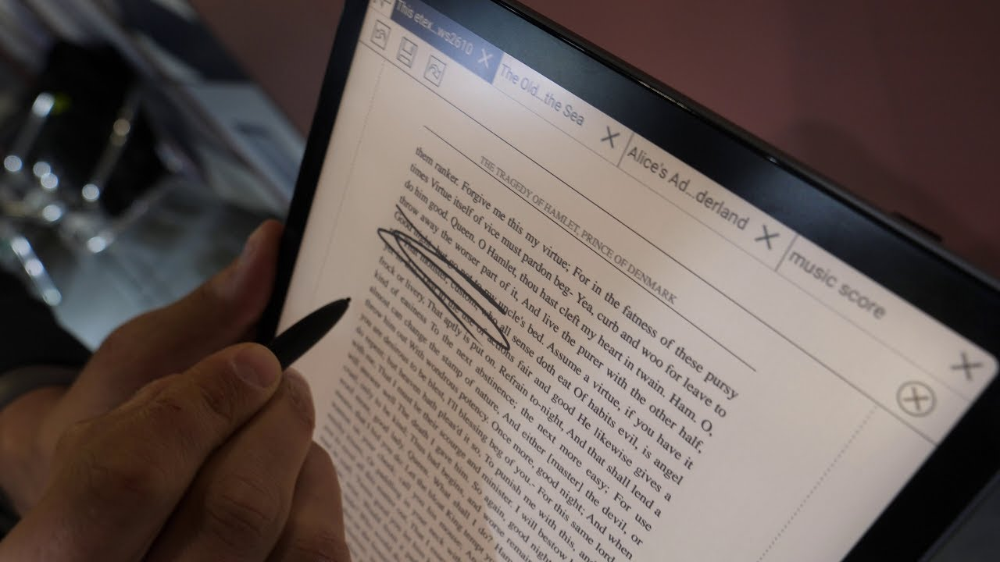
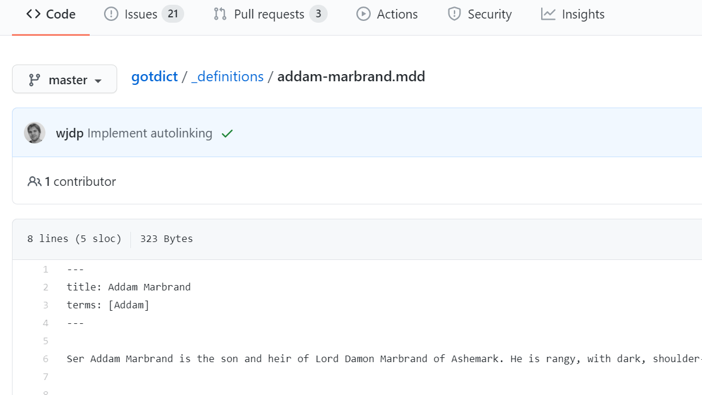

I recently sold my Kindle and bought a larger ePaper tablet, a BOOX Note Pro, so that I can read scientific papers and PDFs comfortably.

However, I still use the tablet for leisure and one of the best books I’ve read is the first volume of A Song of Ice and Fire, by George R. R. Martin.
As I wanted to continue reading the saga, I went online and looked for the precious helper that supported my reading of Game of Thrones: a Game of Thrones dictionary.
To my disappointment, I could only find it for the Kindle and the Kobo, but not for my device.
So I decided to do something about it.
The first thing I had to do was to find out what dictionary format my BOOX device accepted.
The BOOX Content Hub mentions the StarDict format and there is even a mention of A Song of Ice and Fire.
It’s as simple as getting the dictionary files and dropping them into a folder called “dicts” on the root directory of the Boox.
Secondly, I had to figure out what I needed to create a StarDict dictionary. Thanks to a detailed guide I found online, the process is as easy as creating a txt file containing a list of keyword and definitions separated by TABs and using custom-made software to convert it into a StarDict dictionary. As I found out later on, the keywords need to be unique.
Third, I had to determine where to get the information from. As I had previously used the GOT dictionary for Kindle, it was easy finding the GitHub repository containing the files used to build the dictionary. The repo has a folder called "_definitions", containing the dictionary entries in Markdown.
Here is an example for Addam Marbrand:

These files were similarly formatted, with a body of variable length and starting with a YAML header, which defines the title of the definition, a list of synonyms of the title, and the record type (if the entry is a character, a river, etc.).
As I know R and the Tidyverse, the easiest way was for me to read these files and turn them into a list column in a data frame. I then extracted the titles and definitions into new columns with some REGEX. As I mentioned earlier, some entries have alternative titles specified by the YAML attribute “terms”; with REGEX, I identified the files (rows in my data frame) containing the attribute, duplicated those rows and extracted the alternative name. This was indispensable as a reader would rarely find the full name of a character; most probably, they would find a shorter version of it, which is listed under “terms”. I then exported this file as a UTF-8 text file and tried to convert it into a dictionary.
The software threw an error but I quickly realised that the entries have to be unique and there must be some character, whose nickname matches their father’s.
Once I removed this entry, the conversion went through successfully.
The dictionary files can be found here:
GOTdict | A Song of Ice and Fire / Game of Thrones dictionary in StarDict format
The associated GitHub repository can be found here: https://github.com/FedericoConcas/GOTdict
Creating this dictionary was fairly easy but this is only thanks to the previous work upon which the entries are based. I doubt that someone would have gone to the extent of creating a dictionary for BOOX, without having access to publicly available data such as the Game of Thrones wiki or the GOT Kindle dictionary.
This is obviously one of the cases that demonstrates the power of open-source.